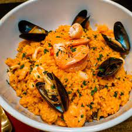

Seafood Risotto Recipe

Ingredients
- 5 cups water
- 16 fluid ounces bottled clam juice
- 1 (6.5 ounce) can chopped clams, drained with juices reserved
- ¼ cup butter
- 1 yellow onion, chopped
- 2 cups Arborio rice
- ¾ cup white wine
- ½ teaspoon saffron
- 1 teaspoon dried basil
- 8 ounces cooked salmon
- kosher salt
- ground black pepper
Steps
- Place water, bottled clam juice, and reserved juice from canned clams into a medium saucepan. Set over medium-high heat; bring to a boil, then reduce heat to low.
- In a large pot or deep skillet, melt butter over medium heat. Stir in onion, and cook until softened, stirring occasionally, about 10 minutes. Stir in rice, and cook, stirring, for 3 to 5 minutes. Do not let rice brown. Pour in wine, and cook, stirring, until the wine is evaporated. Add 1/2 cup of simmering broth, and stir until the broth is almost all evaporated. Then add another 1/2 cup of broth. Stir in saffron and basil. Continue adding broth 1/2 cup at a time and stirring until the liquid has evaporated until the rice is almost al dente, about 20 minutes.
- When the inside of the rice is slightly more firm than you desire in the final dish, stir in clams, flaked salmon, and 1/2 cup broth. Stir until the liquid evaporates. Season with salt and pepper. Stir in 1/2 cup broth, and stir vigorously. Remove from heat before the liquid has completely evaporated.